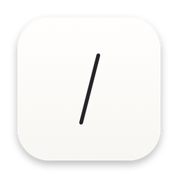
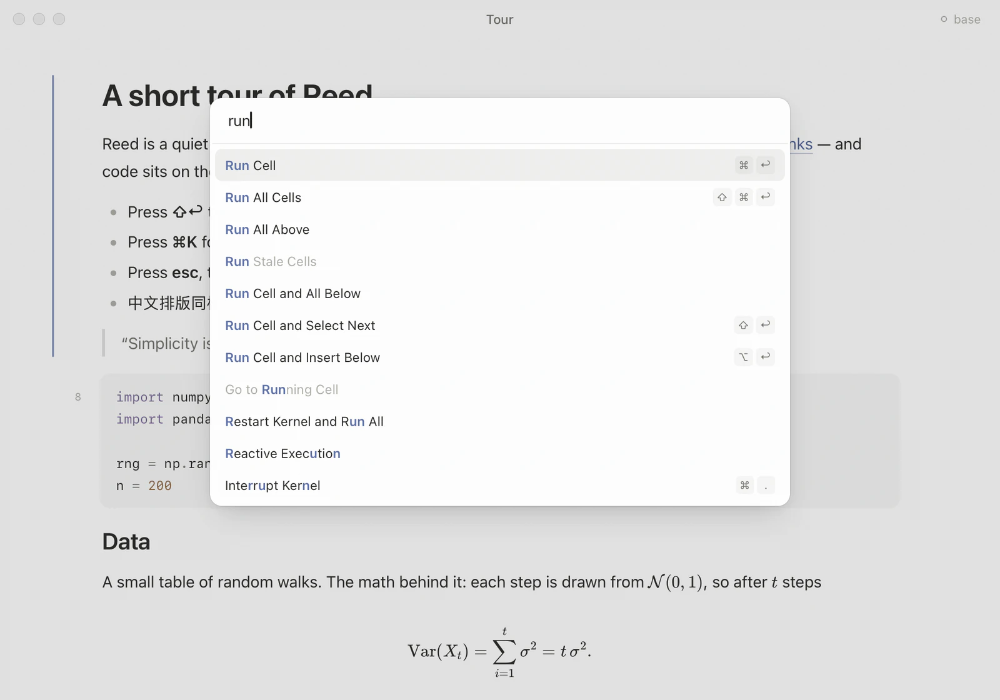

Reed
一个安静的 Jupyter 笔记本编辑器，只为 macOS 而做。

一个安静的 Jupyter 笔记本编辑器，只为 macOS 而做。

像 Typora 一样把注意力还给内容，像 marimo 一样能响应式执行；读写的仍然是标准 .ipynb，连接的仍然是你机器上已有的 Jupyter 内核。
谁谓河广？一苇杭之。
——《诗经·卫风·河广》
Reed 是芦苇。河再宽，一根芦苇也渡得过去；芦苇削尖了就是最早的笔；帕斯卡说人是一根会思考的芦苇。图标就是那一根。
单元格没有边框。代码只靠一层极淡的底色和正文区分，输出直接落在页面上，图和表格居中，像排好版的文档。
你在哪个单元格，由左侧页边的一条细线说明，而这条线是“走”过去的：移动、增删、折叠，都用同一条曲线、同一个时长（0.2 秒）滑到位，没有弹跳。此刻这段文字旁边的，就是那条线。
页面上平时没有按钮。命令面板 ⌘K 是总入口：所有命令按名字搜索；选内核、跳到标题、打开笔记本、看内核里的变量、改设置，也都在这同一个面板里。它是唯一的面板——没有侧栏。
鼠标做的事很少。另有两样东西，只在鼠标停到它们所在的地方时才浮现：单元格或某一段输出旁的复制按钮，和两个单元格之间用来新增一格的小记号。
这一页也听同样的按键： 打开它的面板，J 和 K 让页边那条线往下、往上走。

Markdown 单元格没有边框，像纸面上的正文。点一下就地编辑，标题、粗体保持所见即所得的字号与样式，离开即渲染。在单元格首行按 ↑、末行按 ↓ 可以直接走进相邻单元格，整篇笔记本像一个文档。
打字时，标题、内核状态、运行计数自动淡出，移动鼠标即恢复。专注模式只保留当前单元格的浓度；打字机模式让正在输入的那一行停在窗口固定高度。
补全是安静的：打字时不弹任何东西，只在光标后用淡色显示最可能的那个名字的剩余部分。Tab 接受，不理它继续打字即可，↩ 永远只是换行。
df = pd.read_csv("walks.csv")
df.describe()输出支持流式文本、错误回溯、DataFrame 表格、Retina 清晰度的图片、SVG、LaTeX、JSON、Plotly 与 Altair；ipywidgets 以原生样式渲染。输出可以直接拿走——图就是图，表格就是表格。

运行一个单元格后，依赖它的单元格序号变成琥珀色，表示结果已过期。打开响应式执行，它们会像 marimo 那样自动按依赖顺序重跑。依赖关系由内核里的 Python 自己分析，作用域规则不会猜错。
自动发现已注册的 kernelspec，以及 conda 环境、项目旁的 .venv、pyenv、uv 等装有 ipykernel 的 Python 环境。没装的环境也会列出，选中按 ↩ 即可安装。
下载 Reed-0.1.0-macos-arm64.zip，解压，把 Reed 拖进“应用程序”。需要 Apple 芯片的 Mac；这一版只在 macOS 27 上构建和使用过，更早的系统没有验证。
Reed 没有经过 Apple 公证（那需要付费的开发者账号），第一次打开会被系统拦下：到“系统设置 → 隐私与安全性”，在页面下方点“仍要打开”；或者在终端里执行：
xattr -dr com.apple.quarantine /Applications/Reed.app不想用下载的包，可以自己从源码构建，大约半分钟。